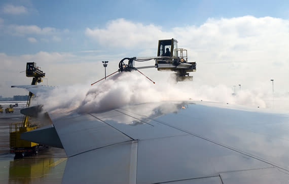

| Accident | What happened | Lesson for us |
|---|---|---|
| Air Florida 90 B737-200, Washington DC, January 1982 | The engine anti-ice was off; iced engine pressure probes gave false high thrust indications, so the actual thrust was too low. Snow and ice were on the wings after a long wait following de-icing. The crew continued the take-off despite abnormal indications. The aircraft struck a bridge and fell into the Potomac River; 78 people died. | Use engine anti-ice when required. Cross-check thrust with all parameters. Respect the holdover time. Act on abnormal take-off indications. |
| Air Ontario 1363 Fokker F28, Dryden, Canada, March 1989 | The aircraft took off in snow without de-icing. The APU was unserviceable, there was no ground start, and the engines could not be shut down. Snow was seen on the wings by cabin crew and passengers, but this was not reported to the flight deck. 24 people died. The inquiry highlighted organisational pressures and the Clean Aircraft Concept. | Never take off contaminated. Check MEL implications in winter. Cabin crew must report contamination. Organisational support for safe decisions. |
| SAS 751 MD-81, Gottröra, Sweden, December 1991 | Clear ice formed overnight on the wings from cold-soaked fuel and was not removed. It broke off at take-off and was ingested by both rear-mounted engines, which surged and failed. The crew made a forced landing in a field. Everyone survived. | Clear ice is hard to see — use the tactile check. Rear-mounted engines are at particular risk. |
| USAir 405 Fokker F28, New York LaGuardia, March 1992 | The aircraft was de-iced, then waited about 35 minutes in snow before take-off. Ice built up on the wings; the aircraft stalled just after lift-off and crashed into the water. 27 people died. | Holdover time is limited and is an estimate. Inspect before take-off. Return for re-treatment when in doubt. |
| American Eagle 4184 ATR 72, Roselawn, USA, October 1994 | While holding in freezing drizzle (SLD), a ridge of ice formed behind the de-icing boots. It disturbed the airflow over the ailerons, causing a sudden roll upset. 68 people died. | Recognise SLD and leave icing conditions immediately. Know the autopilot limitations in icing. |
| Southwest 1248 B737-700, Chicago Midway, December 2005 | The aircraft landed in snow on a contaminated runway with a tailwind. Reverse thrust was deployed late, and the landing distance assessment relied on optimistic assumptions. The aircraft overran into a road; a child in a car died. | Calculate landing distance at the time of arrival with an adequate margin. Deploy reverse thrust promptly. |
You have now completed all the lessons. Take the final quiz: 20 questions drawn at random, with a pass mark of 80 %. After passing, you can print your certificate and watch the closing video.
Which accident is most closely associated with clear ice from cold-soaked fuel being ingested by rear-mounted engines?
Answer: B. SAS 751 (MD-81, 1991): clear ice on the wings from cold-soaked fuel broke off at take-off and was ingested by both rear-mounted engines.
Training material only. It does not replace the Aircraft Flight Manual, FCOM, QRH, MEL or the Domestic Airlines Operations Manual, which always take precedence.